With Visual Search, you can combine text-based and metadata-based criteria into a single search, with the options to specify a valid date range and to include document family members. In addition, Visual Search enables you to perform and review searches by using one of three 2-dimensional Charts as well as a Concept Wheel. For a quick overview of Visual Search, see
Several default search assumptions apply to both Advanced and Visual Search.For more information, see
After entering
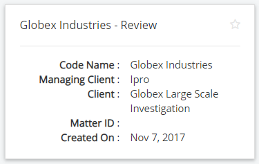
Click the button at the bottom-right corner.
The Visual Search Review Dashboard appears. The dashboard is a full-screen display of all the Visual Search elements: Charts/Concept Wheel, plus the Results grid and the Search Report.
The full-screen icons allow you to see each dashboard area in full-screen view.

This type of searching lets you view results in a manner that correlates between two or more data fields, or in relation to a data set as a whole. In the Visual Search Review dashboard you will see the following chart elements:
|
|
Note: Clicking the icon above the Pie Chart pull-down menu allows you to choose the Concept Wheel or the Pie Chart.
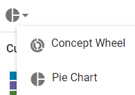 |
A Pie Chart displays sections with the nine highest counts for any given search along with a tenth count containing all “Other” results.
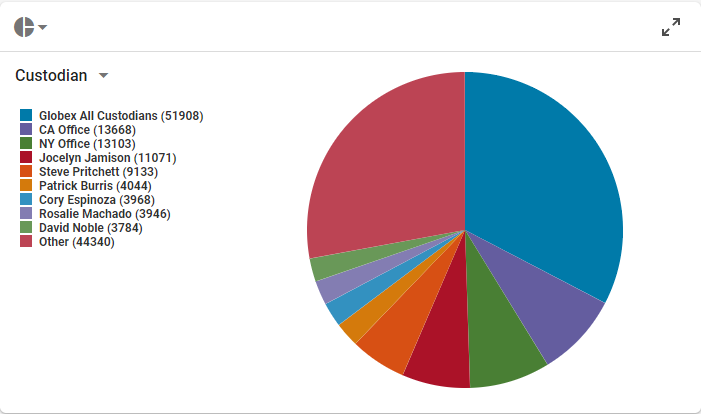
What the pie sections represent is determined by the filter field you select from the pull-down menu at the top left of the chart.
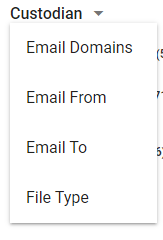
When you hover over a pie section, a tool tip pop-up shows the section counts and values, as also indicated by the chart’s legend.

A Bar Chart displays sections with the nine highest counts for any given search along with a tenth count containing all “Other” results.
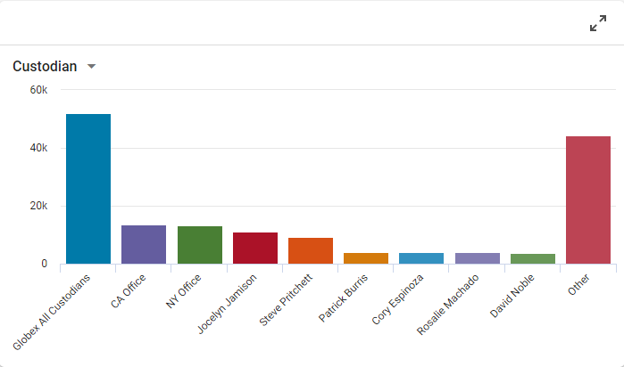
What the bars represent is determined by the filter field you select from the pull-down menu at the top left of the chart.
When you hover over a bar, a tool tip pop-up shows the section counts and values, as also indicated by the chart’s legend.

A Heat Chart shows the correlations between two different fields, along both the X- and Y-axes. Each axis contains a drop-down menu that allows you to determine the filter fields displayed along each axis. In the following example, the X-axis is set to Email From, and the Y-axis is set to Email To.
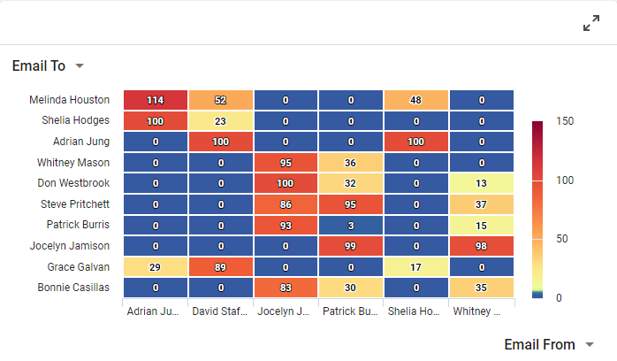
When you hover over either axis, a tool tip pop-up shows the section counts and values, as also indicated by the chart’s legend.
The concept wheel is a visual representation of cluster details and based on the clusters configured by your administrator. It corresponds to the details listed for a selected top-level cluster as shown in the Visual Search dashboard.
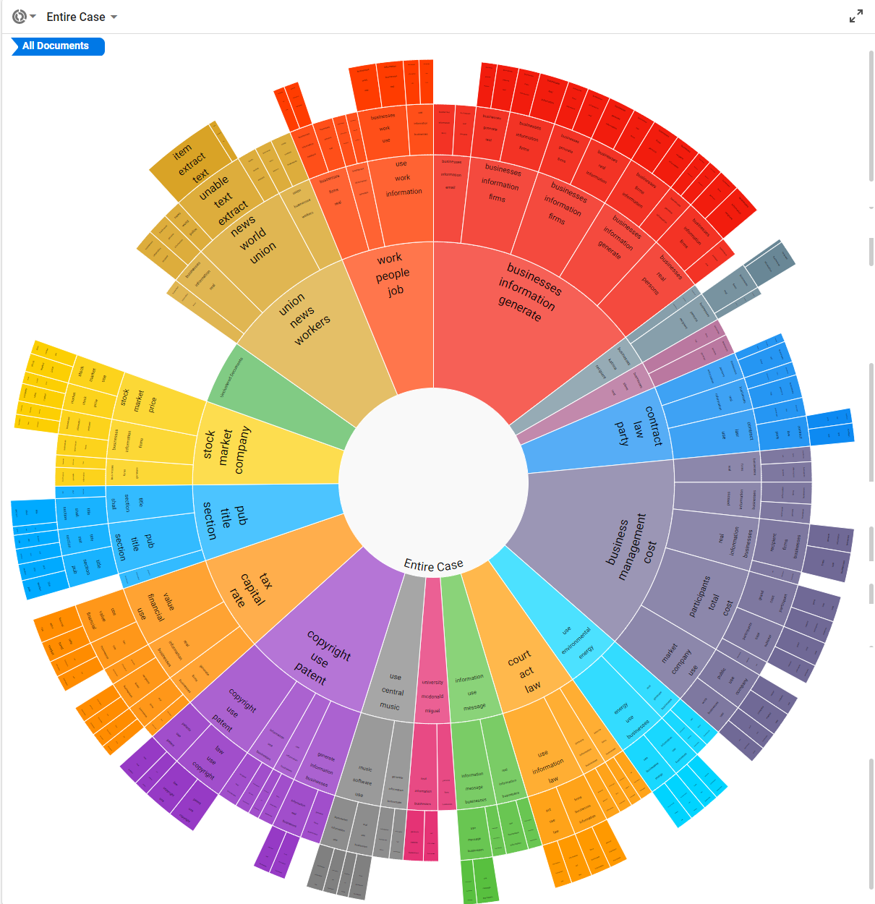
When you hover over a cluster, a tool tip pop-up shows the section counts and values, as also indicated by the chart’s legend.

|
|
Note:
|
For more information on how to create and modify cluster sets, see
Searching within the dashboard Charts or Concept Wheel is similar. For detailed information about how search criteria is determined, see
When determining search criteria within any of the Visual Search dashboard charts, there are two distinct scenarios:
You can accomplish both scenarios A and B by using the hover-over-the-chart method. See
|
|
Note: Using the hover-over-the-chart method allows only the first chip to contain multiple ORed values. |
You can also accomplish scenario B by using the chip drop-down menu filter method. See
Once you have created a chip, you can add more values to the chip by clicking the chip to access its drop-down menu.
For these two methods, the Pie Chart is used as the example in this discussion, though the methods apply to all the chart types.
|
|
Note: This method will work for most users' search criteria requirements. If you require a more flexible criteria setup, please see |
In the following Pie Chart example, hovering over a pie section and clicking ADD CRITERIA TO SEARCH creates a chip for that section.


Once this takes place, hovering over a section produces either an UPDATE EXISTING or ADD NEW pop-up option.

Clicking UPDATE EXISTING will OR the selected value to the value already existing within the chip. The chip now displays the updated criteria by including a “+1” to indicate there is an ORed concept included in the chip.

You can OR additional concept criteria within the first chip multiple times. Hovering over another section and clicking UPDATE EXISTING will OR that value to the others within the chip. The chip display will now include a “+#”, where the # indicates how many additional selected criteria are currently ORed within the chip.


|
|
Note: In the hover-over-the-chart method, the UPDATE EXISTING option is only active for the first chip and ORs the chosen value to the existing value(s) in the first chip. Once ADD NEW is chosen, a new chip is created and its single value is ANDed to the first chip. At this point the UPDATE EXISTING option is inactive and grayed out. Subsequent chips can only be ANDed to the previous chips.
|
Clicking ADD NEW creates a chip for that single value and then ANDs the new chip to the existing chip or chips. Hovering over another section and clicking ADD NEW will create a new chip that will be ANDed to the existing chips. Multiple chips can be created this way and ANDed together.


After the very first chip is ANDed to the second chip, the UPDATE EXISTING option is grayed out, letting the user know through a pop-up that “One or more criteria already exists, please edit using the existing filter.”

Unless you choose to use the drop-down menu filter method (see
|
|
Notes:
|
For most users, the
To add values that you want to OR within a chip, click the chip and the following drop-down menu displays for the selected filter field.

In the drop-down menu, you can select one of three operators: Any of These, All of These, and None of These. The operators act on the selected types in the list.

The second chip now shows a +2 to indicate OR'd values have been added.

The following example shows a search for: Any documents for custodians: Rachael Dejesus OR Charley Hoover OR Cory Espinoza; AND Emails for custodians Antonio Sumner OR Ariana Akers OR Angel Guy AND no emails of Sonya Bernal.

The following search components allow you to refine your search by selecting additional search criteria.
Search Filters allow you to further refine your search results by selecting one of the filter options in the Filters drop-down menu.
Select the Filters icon at the top-left corner of the screen.

After a filter has been selected, the drop-down menu changes to display additional options.

In this menu, select the required Operator, select any required checkboxes, or type specific search terms depending on the filter selected.
Operators vary depending on the Search Type chosen. They are presented in plain language for easy understanding. Operator choices are listed in the following table.
|
operator |
Description |
|
Is Not Empty |
The selected field is not empty. For example, if the Coding Date field is set to Is Not Empty only documents that have a Coding Date defined will be included in the search results. |
|
Is Empty |
The selected field is empty. For example, if the Coding Date field is set to Is Empty only documents that do not have a Coding Date defined will be included in the search results. |
|
Equal |
The field content matches exactly the search/term phrase. |
|
Not Equal |
The field content does not exactly match the search/term phrase. |
|
Is Less Than |
Field content is less than the specified value. For numeric or date fields, this refers to numbers/dates; for text-related fields it refers to the letters of the modern English alphabet (a - z). |
|
Is Greater Than |
Field content is greater than the specified value. For numeric or date fields, this refers to numbers/dates; for text-related fields it refers to the letters of the modern English alphabet (a - z). |
|
Is Less Than Or Equal To |
Field content is less than or equal to the specified value. For numeric or date fields, this refers to numbers/dates; for text-related fields it refers to the letters of the modern English alphabet (a - z) |
|
Is Greater Than Or Equal To |
Field content is greater than or equal to the specified value. For numeric or date fields, this refers to numbers/dates; for text-related fields it refers to the letters of the modern English alphabet (a - z). |
After the filter is defined, click OK to add the new filter to your search definition.
When performing a search that requires the use of a search relationship, use the Relationships drop-down menu.
Select the Relationships icon at the top-left corner of the screen.
Select the relationship you would like to include in the search. You can select only one from the list.
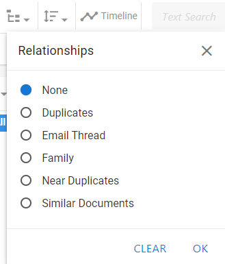
After a relationship is selected, click OK to add the relationship to your search definition. The Relationships icon highlights blue to indicate that a relationship is selected.
To learn more about each relationship type, see
|
|
Note: This option should not be selected when random sampling is used. |
The Sort Options drop-down menu contains a list of fields on which to sort the Visual Search results.
Select the Sort Options icon at the top-left corner of the screen.
In the dialog box that opens, select the field you would like to sort in the drop-down menu.

After a field is selected, set whether the field should be sorted in ascending or descending order. The default sort order is ascending.

After all fields have been selected for sorting, click OK to apply the sort order to the search definition. The Sort Options icon highlights blue to indicate that a sort order has been selected.
If necessary, select additional fields and choose their sort order. When you sort based on multiple fields, the order of the sorting is based on the order in which the fields are selected. For instance, if you chose to sort Custodian as ascending for your first field, and BEGDOC as descending for your second field, the search results grid displays any Custodians that begin with the letter "A" before Custodians that begin with the letter "B". However, the records associated with each custodian are displayed in order of highest BEGDOC number to lowest.
Random sampling provides a representative set of documents from the search results. With random sampling, every document in your search results has an equal chance of participating in the sample; the number of documents in the sample depends on either a fixed value that you define or a statistics calculation based on confidence level and margin of error values that you set.
When active learning is enabled, you choose the desired sampling type (Statistical Sampling or Fixed Size) in the Random Sampling drop-down menu.
Select the Random Sampling Options icon at the top of the screen.

For Statistical Sampling, select your confidence level and margin of error.
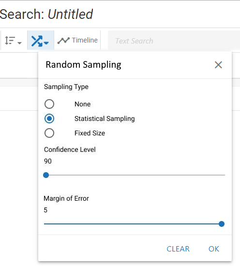
Confidence Level has three options: 90, 95, and 99.
Margin of Error has a range of 1-5.
For the Fixed Size option, the fixed size is an integer field.
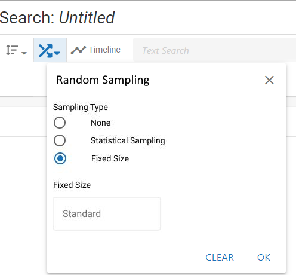
For more information on these options, see the chart below.
|
Sampling Type |
Description |
|
Sampling Type |
Statistical Sampling - based on standard statistics calculations that use a confidence level and margin of error. Fixed Size - creates a sample containing a specific number of documents in the search results. When this option is selected, enter the desired size (a value equal to or greater than 1) in the Fixed Size field. The value you choose should be based on the size of the search results without random sampling applied and how many of those documents represent a good sampling size. |
|
Confidence Level |
Confidence level represents the reliability of an estimate, that is, how likely it is that the sample returned will be representative of all search results. The larger the confidence level is, the narrower the range of documents will be that are considered to be representative.
|
|
Margin of Error |
The margin of error expresses the amount of error to be allowed in the search results sample. Select a value from 1 - 5, where 1 is the least amount of error and 5 is the highest amount of error. A setting of 1 typically returns the most documents; a setting of 5 typically returns the fewest documents. |
When your random sampling is configured, click OK to add it to your search criteria.
The Timeline provides a simple way to filter the current document set based on a date range.
On the dashboard, clicking the Timeline button displays the Timeline across the top.

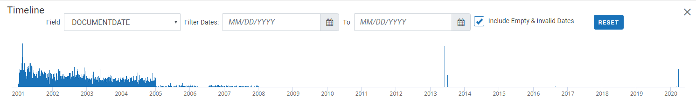
The dates presented in the Timeline example are based on the DOCUMENTDATE field. This field is populated with the dates in your case, such as calendar/email dates (Appointment Start Time, Sent Date, Date Created, Date Modified fields) and/or document dates (Date Created, Date Modified fields).
The ability to view and use the Timeline is governed by a specific permission. In addition, field permissions are taken into account for Timeline display purposes, such that users who do not have access to a particular Date or DateTime field specified for the Timeline are unable to see the field's data in the Timeline.
The Timeline initially depicts all dates found in the selected document set, from the earliest to the latest.
The graph is a general representation of the number of documents found for each date. If your case has a very large date span (for example, 10 years or more), the Timeline graph may not be visible initially.
The details provided along the X axis (bottom) of the Timeline vary depending on the size of the date range—from years for large ranges to hours for small ranges.
|
|
Note: Check with your administrator if you do not see the Timeline and you feel you should be seeing/using it. |
To change the date range by entering or selecting the dates of interest:
The search Field drop-down menu and Filter Dates fields are at the top of the Timeline. The left field is the starting date and the right field is the ending date. Either enter or select the required dates in these fields.
To enter dates, use the format MM/DD/YYYY.
To select a date from a calendar, click the calendar icon and the date of interest. Use the arrow buttons in the calendar heading to scroll backward or forward one month at a time.
Optional: Select the Include Empty and Invalid dates option to include into the document set documents that contain date problems. This option affects only the documents listed in the case table; it does not affect the Timeline.
The Timeline changes to show only the details in the selected range, and the case table lists only the documents that contain dates within the range.
The Timeline’s start/end dates match the actual starting and ending dates of the range, if the dates differ from the dates you entered.
Instead of (or in addition to) entering/selecting dates, you can drag in the Timeline as follows:
Point to the Timeline in the general area you want to select, and click and hold the left mouse button.
Drag right or left as required to define the range of interest. When you stop dragging (release the mouse button), the selected range will be shown as a bar in the Timeline, for example:
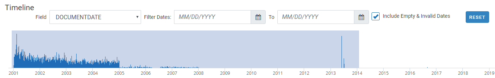
If the range is incorrect, you can change the start and end dates in the search Field drop-down menu and Filter Dates fields above the Timeline. Or, you can click and drag again to further narrow the date range.
Optional: Select the Include Empty & Invalid Dates option to include into the document set documents that contain date problems. This option affects only the documents listed in the case table; it does not affect the Timeline.
The Timeline changes to show only the details in the selected range, and the case table lists only the documents that contain dates within the range.
After the Timeline is modified, it can be reset to match the original (entire) document set—simply click .
|
|
Note: When you change dates in the Timeline section of the Visual Search dashboard, all subsequent search criteria entered will pull only documents from the selected date range. You may click if you want to search outside of the specified date range. |
To search for a specific term or phrase, type the search expression into the main search bar. Press Enter or select the magnifying glass beside the search bar to add the expression as a search criterion. A chip shows beneath the search bar that displays the term used in the search.

After the search expression has been entered, you can continue defining the visual search by selecting additional criteria, or you can run the search by clicking the Search button at the top-right corner of the screen.
|
|
Note: You can input only one search expression when defining a visual search. Entering a second expression into the main search bar replaces the first. |
To complete the search and review the search results, see the sections below.
After you have added all your criteria to the search definition, run the search by selecting the Search button at the top-right corner of the screen. Alternatively, you can save the search by choosing the Save option.

For more information about saving searches, see
|
|
Note: Adding criteria does not automatically run the search. When ready to run the search, click the Search button at the top-right corner of the screen. |
The Results grid segment of the dashboard lists all documents meeting your search criteria in a grid format. The column heading fields reflect the fields on the first coding form.

For more information about how Search Results works, see
The Search Report allows you to view the case data that correlates to your visual search parameters. You can export a report for all of the charts, but not the Concept Wheel. The Search Report shows document counts, as well as family document counts, as it relates to the data field(s) selected for your chart’s axis.

Within the report, there is a pull-down menu that allows you to switch between the different Charts.

You can change the sort order of the report alphabetically by field, or numerically by document count.

After you have built and saved a Visual Search, you can run Advanced Search capabilities by editing the search within the Advanced Search tab by clicking the link within Need to construct an Advanced Search? in the top right of the dashboard.

To continue with an Advanced Search, see
Related Topics